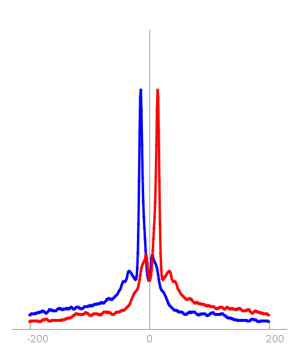

| Replicate | ReadCount | CtrlScaling | SignalFraction |
|---|---|---|---|
| 1 rep1 | 2057605.0 | 0.269 | 0.000 |
| Condition | Events | File |
|---|---|---|
| 1 | 0 | YAL005C_SSA1_Normal_YPD_chexmix_1.events |
| Condition | Heatmap (+/-250bp) | Sequence plot (+/-15bp) | Subtype 0 |
|---|---|---|---|
| 1 | No events | No events |  |
| NA | |||
| 0 events |
| Condition | Replication code file |
|---|---|
| 1 | YAL005C_SSA1_Normal_YPD_chexmix.all.replicationcodes.table |
| Replicate | Event file |
|---|---|
| 1 rep1 | YAL005C_SSA1_Normal_YPD_chexmix_1_rep1.repevents.txt |
Try inputting these motifs into STAMP for validation